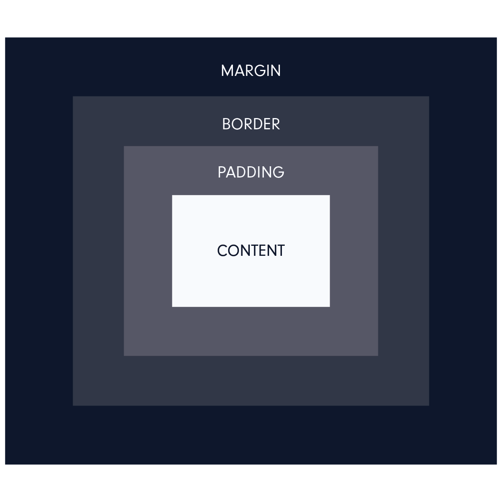

Structure, Phrasing and Display
Block level elements are elements on the page that each begin on a new line and take up the full width of it's parent element. Inline elements are slightly different in that they don't have to start on a new line, they can start anywhere within the line and it's width only reaches as far as the tags define it. For example, something in strong tags will only be bolded when the tags open and close - it does not effect the entire line.
There are multiple displays for these elements and they can be defined as either block, inline, inline-block, or none. The block element defines the property of that entire line, while the in-line elements effect only that section of the block.
Box Model
The Box Model is a layout style that essentially consists of a box wrapping around all the html elements within the page. It includes the border, margins, padding that surround the content and allows you to define each element that exists within the box. However, if you were to define the height or width of the box by simply using those declarations, it would only define the sizing of the content - not the actual box itself (i.e. the content is 600 pixels and the border is 5 pixels, the total width will actually be 610 pixels despite you specifying the width). The box-sizing property allows you to include more elements other than just the content into the total calculations. Meaning when you define the box-sizing property to be border-box and the width to be 600 pixels, then the entire box content and borders included will total 600 pixels.

Background Images
In general, it is better to use the img tag in your web pages when the images are necessary to the content. This way you can add an alt name and it can be indexed by search engines and accessible to all. Background images within CSS are better suited for content that is strictly for design or style purposes. Background images might also load slower, whereas an img tag would allow the rest of the content to load even before the image has finished so the user can still begin to use the web page and view it's content.